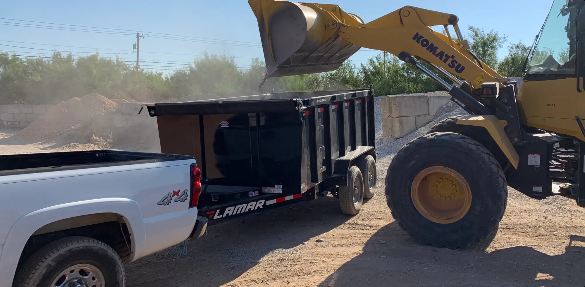
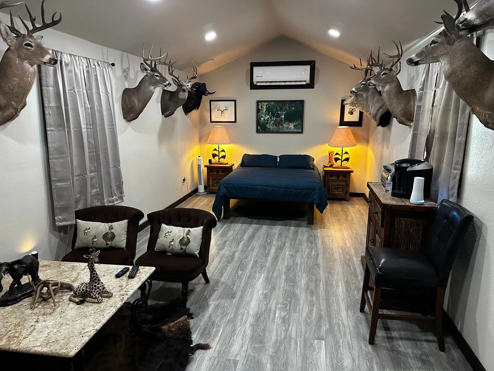
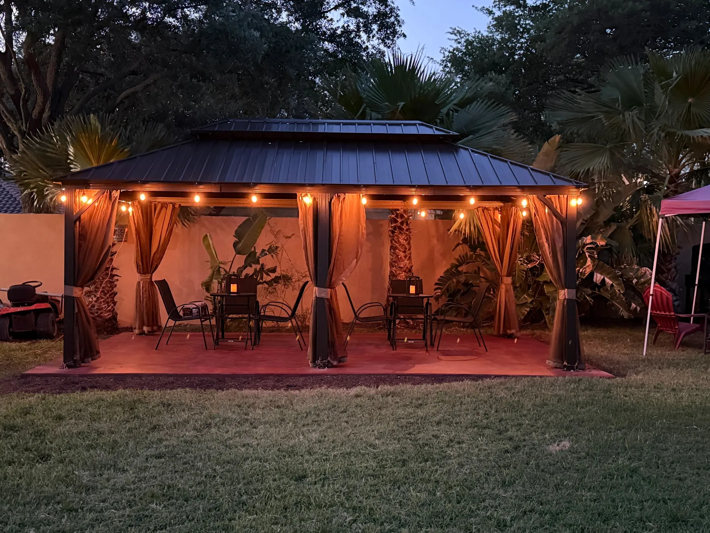
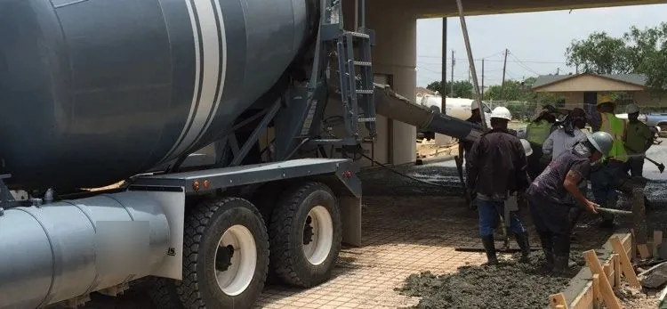

What we do
Our commercial projects include both new construction and repairs/restorations. Occupied and fully operational job sites are never a problem. And we can also plan, manage, and build multi-phase jobs.

General contractor · Laredo, Texas · 27.5035° N 99.4703° W
Commercial and residential construction, repairs and restorations, planned, managed and built by one team. We’ll get the job done!
About us
We work with architects and designers to produce beautiful, functional structures, and bring project management skills and extensive construction experience to every job.
Our commercial projects include both new construction and repairs/restorations. Occupied and fully operational job sites are never a problem. And we can also plan, manage, and build multi-phase jobs.
An end-to-end client experience that includes seamless communication, budgeting, staffing, on-site organization, and solid, quality handiwork every time.
Built for eye-catching beauty and efficiency. We know how to make the most out of limited space: if you don’t have room to build out, we’ll build up.
By the numbers

Featured work
Recent work
Drag or swipe →






“They were on it the very next day and finished within two days. Not only did they replace the roof; they removed any all all debris from the property.”Annie Serna · Google review
“This company takes pride in the quality of work they do. Everything is done in a timely and professional manner with close attention to detail.”Nora Menza · Google review
“They came out to the office gave us an estimate and by the next day we had our issue fixed. Hands down the best in South Texas!”Eli Lopez · Google review
“The team at Sanchez Construction is very professional, experience and dependable. You WILL NOT be disappointed!”monica robledo · Google review
“I called on a Monday morning and by Tuesday Morning my gate was as good as new. Mr. Sanchez is very professional and courteous.”Marisela Castaneda · Review shown on the company’s previous website
Explore
 23 SERVICES
23 SERVICESThe full list, plus how a build runs from pre-construction to walkthrough.
 GALLERY
GALLERYReal photos from real jobs, plus a bathroom before & after.
 5.0 ★ GOOGLE
5.0 ★ GOOGLEWhat homeowners and businesses in Laredo say.
 MARKET ST · LAREDO
MARKET ST · LAREDOCall, email or visit. Hours, map and a quick quote form.
Got a project?
Call for a quote or tell us about your project. New construction, repairs, restorations and everything on our list, in Laredo.